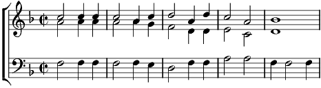

1. Écoute-moi toi qui t'crois seul au monde
Tout seul abandonné
Faut trois fois rien pour entrer dans la ronde
De tous les mal-aimés
Refrain:
Suspends un violon un jambon à ta porte
Et tu verras rappliquer les copains
Tous tes soucis que le diable les emporte
Jusqu'à demain
2. Ta petite amie t'a largué en route
Les filles c'est pas sérieux
L'amour est aveugle ah ça aucun doute
Eh oui ça crève les yeux
Refrain
3. Qu'importe si c'est chaque fois la même
Chose, t'en fais donc pas
Mon vieux quand on n'a pas ce que l'on aime
Faut aimer c'que l'on a
Refrain